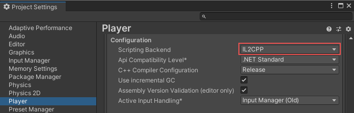

IL2CPP (Intermediate Language To C++) is Unity’s custom, ahead-of-time (AOT) scripting back end, which was originally developed for platforms that don’t support MonoA scripting backend used in Unity. More info
See in Glossary and just-in-time (JIT) compilation, such as iOS. IL2CPPA Unity-developed scripting back-end which you can use as an alternative to Mono when building projects for some platforms. More info
See in Glossary converts IL (Intermediate Language) to C++, and compiles it into platform-specific native code, which is then packaged with your application in the standard format for the target platform, such as APKThe Android Package format output by Unity. An APK is automatically deployed to your device when you select File > Build & Run. More info
See in Glossary/AAB, iOS app bundle, or Windows executable and DLLs.
IL2CPP is supported on all platforms and can offer several benefits over the Mono scripting back end, including improved performance and shorter startup times. However, the need to include machine code in built applications generally increases both the build time and the size of the final built application.
IL2CPP supports the debugging of managed code in the same way as the Mono. For more information, refer to Debugging C# code in Unity.
To build a project with IL2CPP, you must have Il2CPP installed as part of your Unity installation. You can select IL2CPP as an optional module when you first install a version of Unity, or add IL2CPP support to an existing installation through the Unity Hub. For more information, refer to Installing the Unity Hub and Add modules to the Unity Editor.
IL2CPP also requires some systems native to the target platform to generate the C++ code. This means that cross-compilation is generally not supported and to build an IL2CPP Player for a particular target platform you must build from an Editor running on the same platform. For example, to build a macOS Player with IL2CPP, you must build on macOS. The exception to this is Linux, where building Linux Players on other desktop platforms is supported. For more information, refer to Linux IL2CPP cross-compiler.
You can change the scripting back end Unity uses to build your application in one of two ways:
Through the Player Settings menu in the Editor. Perform the following steps to change the scripting back end through the Player Settings menu:
You can also open the Player Settings menu from the Build Profiles window; go to File > Build Profiles and click on the Player Settings tab.
Through the Editor scripting API. Use the PlayerSettings.SetScriptingBackend property to change the scripting back end that Unity uses.

For more information about system requirements for desktop platforms, including IL2CPP requirements for individual platforms, refer to the Desktop section of System Requirements for Unity.
When you build with IL2CPP, Unity automatically performs the following steps:
Project build times with IL2CPP can be significantly longer than with Mono. However, you can do several things to reduce build time:
In suitable projects, you can improve the runtime performance of your project by using the Burst compiler alongside IL2CPP to compile compatible sections of your code to highly optimized machine code. For more information, refer to Burst compilation.